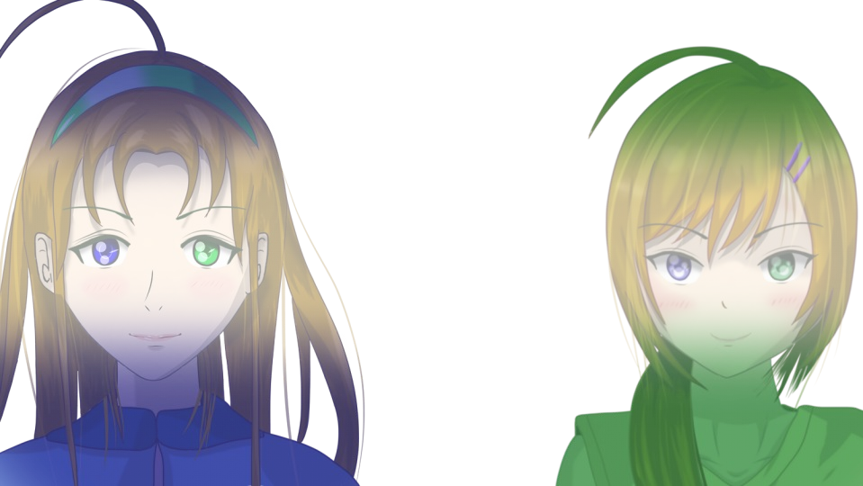

Script 00001AFE
Do you remember what happened in Megasawa City?
Did you think you could be happy if that incident never happened?
Never knowing that avoiding the Megasawa case would make something far, far more horrible happen―

This is Haruka's hometown, the Arata settlement.




Sisters with odd eyes?

Six paper dolls...

The Arata settlement has a goshinboku too...?
Ojisan is alive...!
Or is it a ghost!?
Or is it a ghost!?


It seems what happened in Megasawa City was only the tip of the iceberg.

In this settlement, everyone dies by suicide!?

What these guys are after is Natsumi's life!
This is Sakura-san.
Just like you, someone with precognition.
Just like you, someone with precognition.